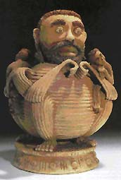

| Sculpting their Dreams
- Ethiopian Artists in Israel
by Sara Hakkert
The legend of the ten lost tribes of ancient Israelites has caught
the imagination of writers and poets during the centuries, finding
them was the quest of many. It came partly true when, during the
last century, small communities of Jewish people that called themselves
Beita
Israel (The House of Israel) were discovered in Ethiopia.
It is believed that their unique identity was preserved because
they lead a tightly knitted social life in secluded areas, tenaciously
clinging to the Jewish religion and to the dream of being redeemed
in the Holy Land. This was accomplished with the establishment of
the state of Israel and their miraculous emigration to Israel in
the early eighties.
The story of their settlement and integration into the life of
the modern state of Israel, which is still taking its course, is
a complex of success and failure; the story of the ceramic artists
from this ethnic group seems to be different.
Traditionally,
pottery in Ethiopia, linked to crafts in general, was among the
less honorable occupations. It may have had to do with a rigid social
structure or, as anthropologists suggest, it may be linked to magic
and the secret of fire; those who know are feared and kept at a
distance. Never the less, the necessity for household utensils for
daily use in the past centuries, made pottery common among men and
women. Alongside, flourished other sculptural and decorative clay
work.
Among the Ethiopian immigrants that came from Gundar area and other
central locations, were a few ceramic artists who had already studied
and worked in Ethiopia. Thenat Awaqa, Eli Aman, Mulu Geta, Menachem
Dincau and a few others, are in recent years, capturing the attention
of the public with interesting work. They live in different parts
of Israel, with no or little knowledge of each other, yet their
work shows admirable consistency. Not only does it share distinct
common stylistic features, that are characteristic also of works
done in Ethiopian community centers in Israel, but an emotional
affinity prevails over all.
The figurative aspect and the narrative themes are the most striking
traits of the Ethiopian sculptural work done so far. Small figurines,
measuring about fifteen to twenty cm., are the most common and popular
sculptures. These were produced in Ethiopia, along functional ware,
for sale in the market place to tourists; they continue to attract
attention of this slice of the market till today in Israel.
The
figurines are based on a cylindrical body upon which a large head
is resting. Arms, pipelike, are attached to the body terminating
in incised fingers. Legs and feet are usually not outlined in the
more simplified versions, since the body is covered in a long gown.
Legs, again pipelike, when present, are placed with feet flat on
the ground in a rigid position. Female and male figures are depicted,
differentiation centers on the head and upper part of the body,
i.e., females have large breasts, men have beards. All artists work
with a low firing clay, unglazed but burnished with simple natural
tools.
In Thenat Awaqa’s work females have large heads due to the
high coiffeur covered with a handkerchief appropriate to Jewish
married women. Faces are elongated with quite large holes for eyes.
Men have beards and are bareheaded, their hair presented by incised
lines. There is little attention to anatomical precision, body and
features are simplified, some are expressively exaggerated. Incised
lines create a linear decoration to enhance the planar surface.
Thenat
Awaqa, a 34 years old mother of four daughters, lives in Israel
since 1991. She comes from a family of potters in the Gundar area,
she trained in Adis-Abeba where she received a diploma in ceramics.
At present she is working at home, hand building and also working
on the wheel “I like to sculpt my dreams” she points
out in an interview, and this innocent remark gives deep insight
into her spiritual and creative world.
Thenat, and all the other artists who live now in Israel, continue
to work in the tradition they were trained and practiced in the
past. The works of Thenat, Eli, Mulu, Menachem Dincau and a few
others, although exhibiting individual qualities, are deeply rooted
in the art and culture of African tribal art with emphasis on the
domestic and mundane. The folklore of the native Ethiopian village
is recreated in their art, in an innocuous and a somewhat idealized
way. The women are engaged in household chores; carrying water,
preparing food and tending their children. Men are doing the more
strenuous work of gathering wood or pounding wheat. Families are
gathered around the table eating their meals.
Eli Aman who emigrated to Israel in 1984 completed his craft education
in Israel, he is forty one years old. He already took part in group
exhibitions, had several one man shows and his work is shown at
private galleries. Eli’s figures are more sophisticated, some
are larger reaching up to fifty cm., although this is a technical
limitation due to the size of his kiln. He concentrates on the male
figure which is depicted in a dignified way becoming the elders
of the village, monks and teachers. The figures are more varied
and the modeling more plastic, both body and dress show a pronounced
three dimensional presence. The same goes for Menachem Dinkau who
made some very interesting figures of musicians, pregnant women
and a group compositions of a preacher addressing his flock.
Mulu
Geta (b.1949) studied pottery in Adis-Abeba and also in Israel,
he too is a known figure among the Ethiopian artists. His style
is much more personal, realism and fantasy figure side by side with
a dash of humor. Some of his sculptures deal with the same topics
such as parenthood, but his artistic imagination is given a freer
hand, as in the two small (about 20 cm. high) works titled Family1
and Family2. By joining two almost complete spheres Mulu succeeded,
in these sculptures, to build an expressive human figure despite
its anatomical incongruity, which is also very rewarding, from a
modern, sculptural, point of view. Arms and legs that follow the
abstract decorative pattern on the body are in harmony with the
whole composition. His sense of humor comes out again in the Musician,
a group seated on a grinning frog, or in the Seated Man, a typical
figure of his repertoire but dressed in a western suit and wearing
a ridiculous pair of glasses.
The high quality of Mulu’s art is again expressed in the
complicated composition of the Mourning piece. It comprises a group
of people mourning an outstretched dead body on the village background.
In a very tight space he cramped together people and huts with a
multitude of essential details, that created a claustrophobic and
somewhat surreal ambiance befitting the grief experienced. The theme
of death preoccupied Mulu for a long time after his arrival in Israel
being a direct response to the hardship and death that befall the
Ethiopian community during its exodus.
Although
living in Israel for almost two decade during which the artists,
as well as their community at large, came in contact with the local
people, they have somehow remained outsiders. Because of a huge
gap between the Ethiopian way of life in the past, and that found
in modern Israel, a gap which comprises religious, social, economic
and cultural differences, they live in a permanent dilemma. Modern
society exerts a continuous pressure towards assimilation in the
new, strange but alluring culture of the present, a pressure that
clashes with the innate wish to cling to their old traditional way
of life. This conflicting existence pervades their life in general,
and it is striking in their art. They all, as Thenat pointed out,
work from memories which draw upon the same source - the familiar,
beloved, but lost way of life.
Some inevitable questions arise; for how long can these artists
nourish on memories that tend to fade in time? What will happen
to the distinctive traits of their art that have sprung from a culture
that is not theirs anymore? Will the strong western bearings of
Israel’s modern and sometime abstract art obliterate their
unique innocent vision of the world or their realistic tendencies?
Will they be able, in the future, to sustain the spirit and humanism
of their past work?
Their art, as of present, is certainly in danger. The better artists,
no doubt, will find their own mode of expression, although the outcome
is difficult to predict. Others may continue to produce the same
figurines or bird adorned bowls in a commercialized vein, for which
stagnation already looms. In any case, it seems, the story of the
art of the Ethiopian artists in Israel, is inevitably going to change
in the future. The work done in the recent past should therefore
be much more appreciated and preserved.
Article courtesy of Sara Hakkert.
© Sara Hakkert
More Articles
|